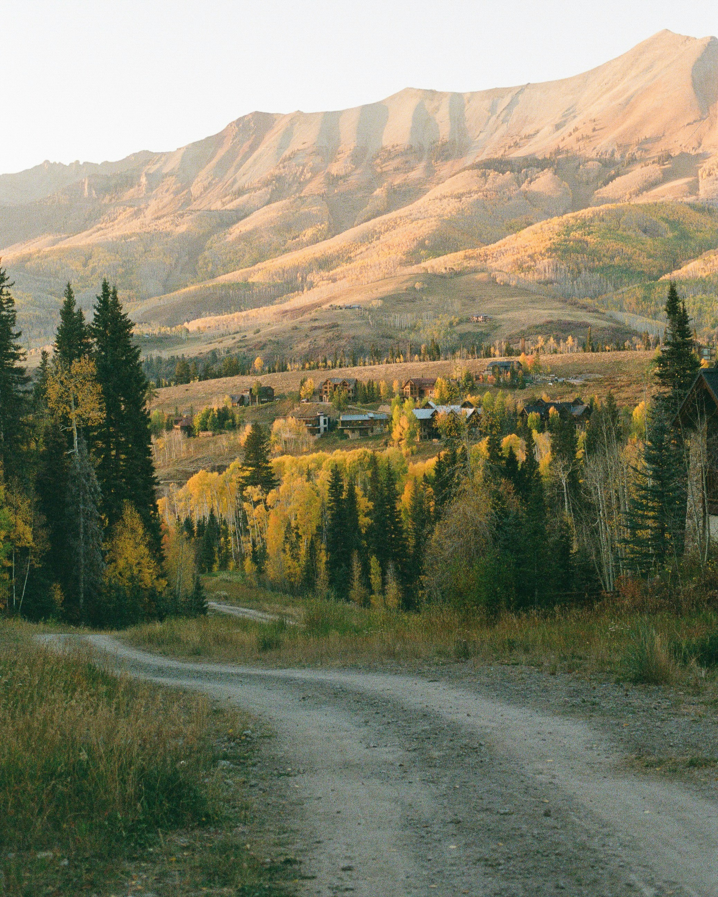
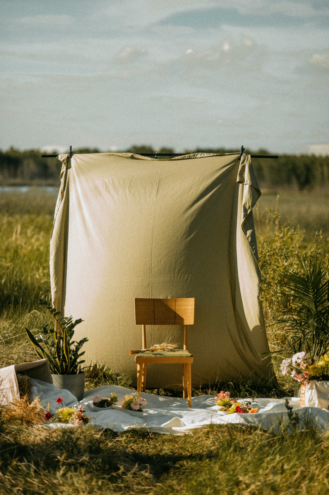

Home
About
Favorites
Gallery
Contact
Gallery
A simple grid (unique layout)

“Dirt Road to Mountains” by
Zach Miller
, via Unsplash.

“Outdoor Chair Setup” by
Redd Francisco
, via Unsplash.
“Waterfall and Sunlight” by
Intricate Explorer
, via Unsplash.